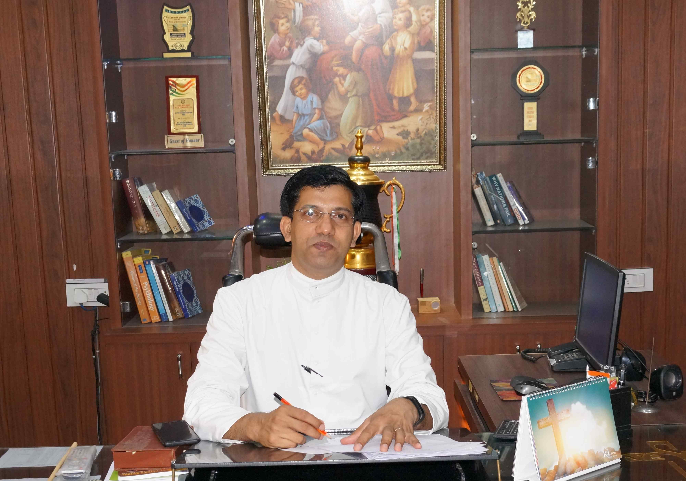

Management & Office Bearers
Governing Council
The People Behind the Vision

Rev. Fr. Suresh D'Souza
Principal
Visionary educationist and founder of the Francis Educational Society, with over 8 years of service to schooling in India.

Rev. Fr. STANY RODRIGUES
Manager
Doctorate in Educational Policy; champion of inclusive, child-first schooling and teacher development programs.
Organizational Structure
How Our School Is Organised
Governance Framework
A clear, accountable structure ensures every decision is made with the child's best interest at heart.
Governing CouncilPolicy, vision & governance
Principal's OfficeAcademic leadership
Vice-PrincipalDiscipline & co-curriculars
HeadmistressPrimary & nursery wing
Department HeadsSubject & activity verticals
Academic Council
Curriculum planning, assessments and teacher development.
Student Welfare
Counselling, scholarships and student councils.
Operations
Transport, security, maintenance and administration.
Finance & HR
Fees, payroll and transparent audits.